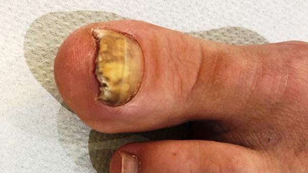
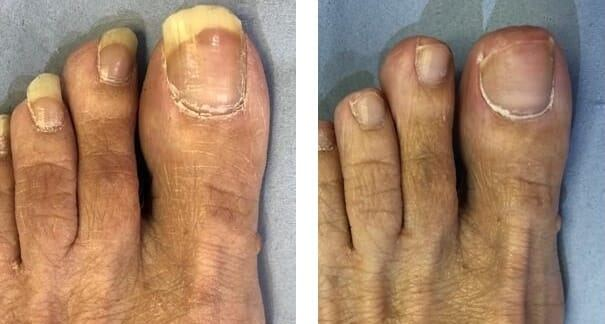
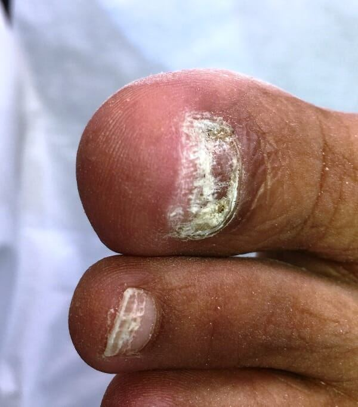

Toenail Trouble

Many of the people who book to see us at kingstonfeet come because they have trouble with thick toenails or fungal toenails.
As a team we must have seen over half a million toenails during our daily work as podiatrists. We certainly have lots of experience and know how to fix thick or ugly toenails.
There really is no need to feel embarrassed or worried about what we may think. We're just focused on how we can use our expertise to get your toenails back to normal and get you enjoying life without pain or toenail worries.
We can help - you name it, we’ve seen it and more!
We are often asked for help with:
- toenail fungus
- ingrown toenails
- long toenails and hard to cut toenails
- thick toenails
- ugly, broken or split toenails
- falling off toenails
The Solution for Toenail Trouble
As you would expect with such a wide variety of problems and causes, the treatment varies and we tailor that treatment to you.
We can diagnose fungal toenails with a quick, reliable test used in the clinic to accurately diagnose fungal toenail infection. We thin down these thick crumbling toenails and supply an easy-to-apply spray for troublesome fungal toenails.

We often carry out simple, painless treatments on troublesome ingrowing toenails. We can use a local anaesthetic if you are particularly worried about your painful toenail. If toenail surgery is required to permanently remove the side of the ingrowing toenail, we can sort that out quickly too.
Long toenails become troublesome when you have difficulty cutting them. If you are unable to get down there to cut them yourself, we can do that for you or we can show you how to cut thick toenails.
Thick toenails, along with injured, broken or damaged toenails need nurturing during their growing stages. We can cut and reduce the thickness or irregularity of these troublesome thick toenails. Our advice helps you to know what caused the damaged toenail and prevent further irritating problems. Sometimes, ongoing care from one of our experienced professionals is required long term to maintain these troublesome toenails.

Toenails that have fallen off may not be painful or irritating initially. However, these troublesome toenails can go on to become problematic as they grow back, sometimes digging into the skin or becoming ingrowing toenails. Gentle care and protection of these nails whilst they return to normal is where our skill and expertise lies. We can also do toenail reconstructions to support the missing toenail as it regrows.
Many factors in toenail problems can be easily sorted out. The unsightly toenails will return to normal because they are renewing themselves all the time. We harness this growth as we carry out treatments and give our advice. Your general health and state of nutrition can sometimes also affect the quality of your toenails. Ask us for advice at your appointment.
If you have any questions about troublesome toenails and how we could help you, please get in touch today and we can talk about your specific toenail problem.
[scriptless]